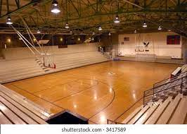

Our Facilities
We offer absolute courses that will help our youth in the future
Suitable library
Everyone that entered our library he/she will thougth that he/she is in paradise. Books departement.

Good and Beautiful Play Ground
Everyone that entered our library he/she will thougth that he/she is in paradise. Books departement.

Best Computer Lab
Everyone that entered our library he/she will thougth that he/she is in paradise. Books departement.